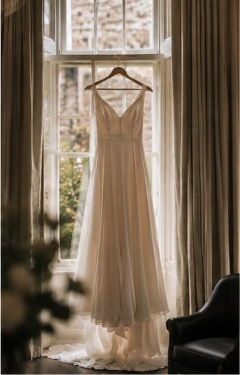

Wedding photography, Scotland
Olive & Ivory, wedding photography in Scotland
A day, as it was.
Documentary wedding photography in natural light. The moments you would never think to ask for.
Scroll

Frame 01 of the day. Generated concept image.
Proof sheet
The day, as a contact sheet.
Choose a frame to see it larger. Keep the moments you love, and they come with you to the reply card. This proof shows four frames; a full sheet holds the day from first light to the last dance.
Getting ready08:40
The details11:20
The vows14:00
Golden hour18:30
Follow the day
One day, in moments.
An example day, not a promise of times
08:40
Getting ready
The room before everyone arrives. A dress by the window, and a few minutes that belong only to you.
11:20
The details
Flowers, rings, stationery. The small things you spent months choosing, photographed once and properly.
14:00
The vows
Seen from where the guests sit and from where you stand. Hands, faces, the pause before the words.
18:30
Golden hour
Ten minutes away from everyone, with the light low and nothing to organise.
Reply
Will you tell me your date?
Four short questions. The moments you kept come with you. This is a demonstration: nothing is sent, saved or stored.